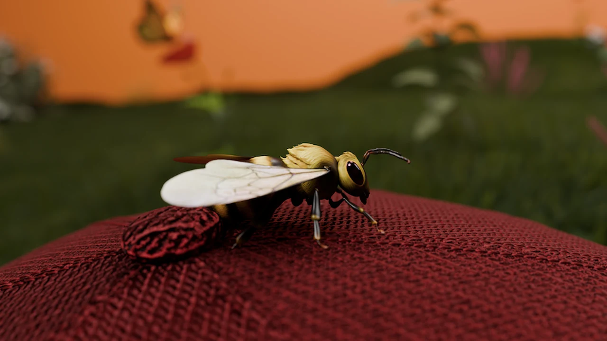
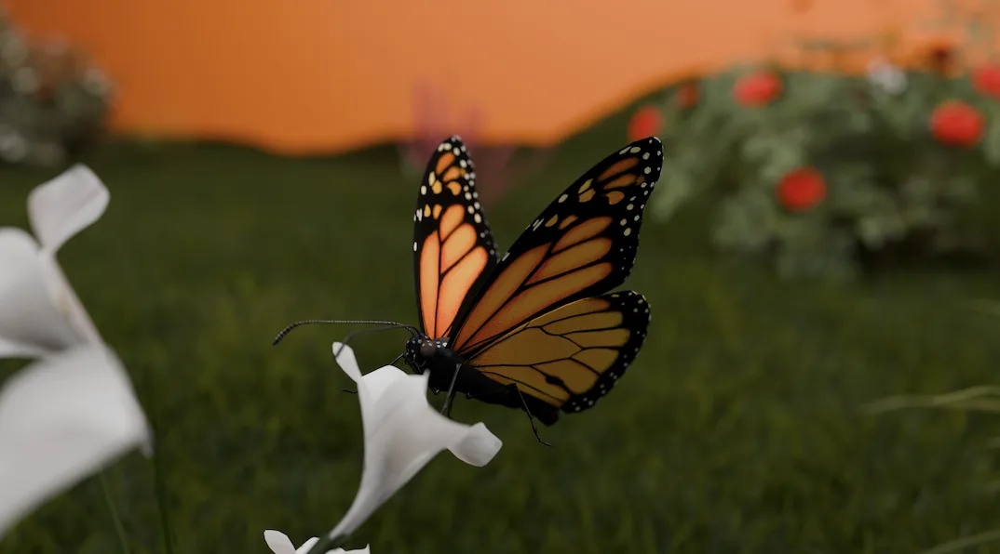
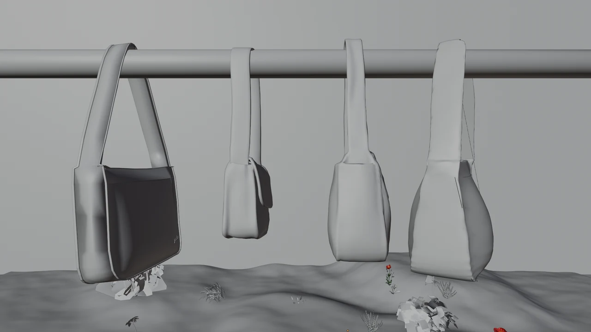

[ 01 ]
PRALINE PARIS
2026
VISUELS 3D POUR LA MARQUE PRALINE PARIS, AVEC UNE DIRECTION VISUELLE GOURMANDE ET CINÉMATOGRAPHIQUE.
- MODÉLISATION
- ANIMATION
- RENDU
- COMPOSITING
- COLOR GRADING
LOGICIELS : BLENDER / AFTER EFFECTS


